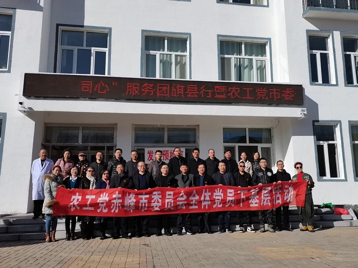
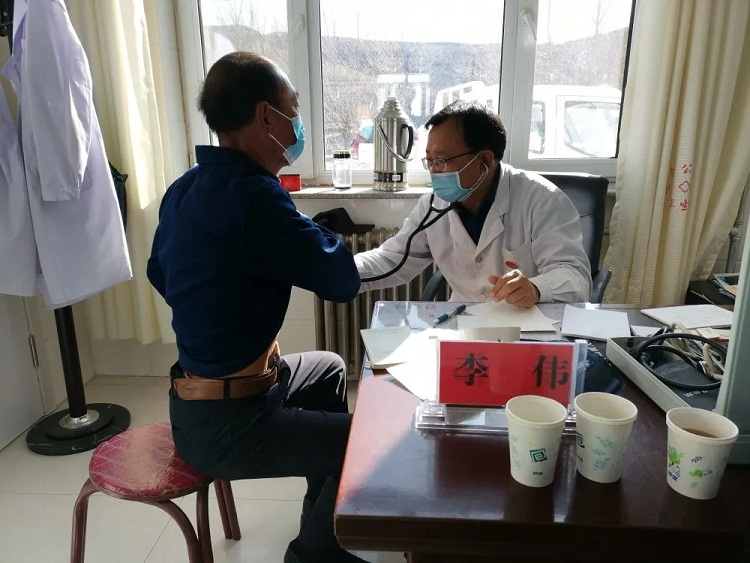
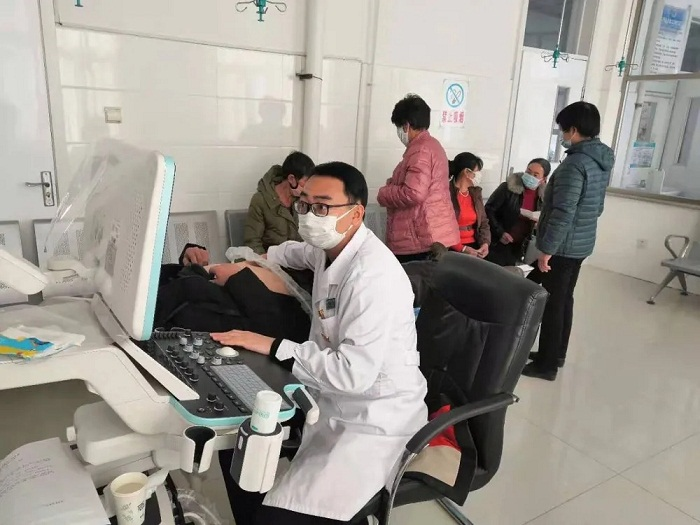

2020年11月8日，农工党赤峰市委副主委李伟、陈文武带队深入赤峰市翁牛特旗亿合公镇开展“全体党员下基层”活动。

活动中，来自赤峰市医院、赤峰学院附属医院、赤峰市肿瘤医院、赤峰市红山区医院等8家医疗机构的外科、骨科、内科、检验科、中医、肿瘤科、超声科近20名专家组成医疗服务队，自带检验、超声设备，为当地近100名群众进行义诊，介绍防病、治病、养生等知识。为现场群众发放了由赤峰金三角医疗器械公司提供的价值8000余元的药品、口罩等，向亿合公镇政府赠送了由农工党赤峰市委制作的健康讲座光盘50份。

活动受到了当地群众的欢迎和好评。参与活动的农工党员一致表示，在今后的工作中要继续利用界别优势，积极奉献、履职尽责，为基层群众提供优质的医疗服务。

中共赤峰市委统战部机关干部，农工党赤峰市委部分党员，特邀医疗专家等30余人参加活动。